CS184/284A Fall 2026
Homework 3: Path Tracer
Overview
This project builds a path tracer from camera rays and geometric intersection tests to a renderer with direct lighting, indirect illumination, and adaptive sampling. I use a bounding volume hierarchy (BVH) to make intersection queries practical for large triangle meshes, then estimate light transport with Monte Carlo sampling. The figures show the rendered results, and the performance tables compare measurements from the Release executable.
The most visible change is the contribution of indirect light: surfaces that are nearly black under direct illumination become visible after light reflects from the walls and floor. The timing experiments also separate two different problems. A BVH reduces the cost of finding geometry, while better sampling reduces the number of rays needed for a clean image. Neither improvement replaces the other.
Part 1: Ray Generation and Scene Intersection
Camera rays and pixel sampling
A normalized image location (u, v) maps to the camera sensor at z = -1. The horizontal and vertical fields of view determine the sensor dimensions. The camera-to-world rotation transforms the normalized sensor direction into a world-space ray, whose origin is the camera position. Near and far clipping distances define the valid ray interval.
In raytrace_pixel, I generate a subpixel offset, divide the resulting pixel coordinates by the image dimensions, and call camera->generate_ray. With one sample I use the pixel center; with multiple samples the baseline uses random offsets from the grid sampler. Part 6 adds an optional jittered sampler. I accumulate estimated radiance and divide by the number of samples actually taken, which also supports early termination in adaptive sampling.

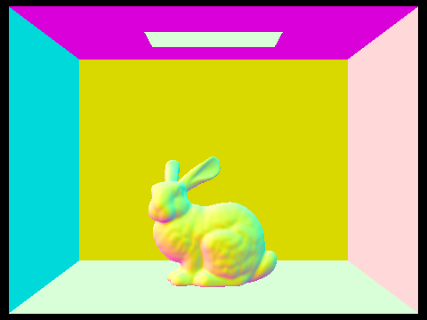
Part 1: Intersection Tests
Ray-triangle intersection
The intersection problem is to express a point on the ray as a barycentric combination of a triangle. For vertices p0, p1, and p2, let e1 = p1 - p0 and e2 = p2 - p0. Solving the equation below gives the ray parameter t and triangle coordinates u and v. I compute p = d × e2 and the determinant e1 · p. With q = o − p0, the cross and dot products give u = (q · p)/det, v = [d · (q × e1)]/det, and t = [e2 · (q × e1)]/det. I reject a near-zero determinant before dividing, then check the barycentric coordinates and ray interval.
The barycentric inequalities reject points outside the triangle, while the ray interval rejects intersections behind the origin or beyond an already known hit. For a closest-hit query, a valid intersection updates the ray's maximum distance and stores t, the primitive and BSDF references, and the surface normal. Smooth normals are obtained from the vertex normals using weights (1 - u - v), u, and v, followed by normalization. An any-hit query only needs to establish that an obstruction exists.
Ray-sphere intersection
Substituting the ray into the sphere equation gives a quadratic. With q = o - c, its coefficients are A = d·d, B = 2d·q, and C = q·q - R². A negative discriminant gives no intersection. Otherwise, the nearer valid root is used; if it is outside the allowed interval, the farther root must also be checked. This is important when the ray starts inside the sphere. The geometric normal is the normalized vector from the sphere center to the hit point.
Normal-shading checks
The diagnostic normal mode replaces lighting with a color derived from the intersection normal. The spheres vary smoothly across their curved surfaces, while the Cornell walls have nearly constant colors. The bunny similarly shows a smooth transition over its surface. These images test the camera and intersection pipeline without relying on shadows or recursive illumination.
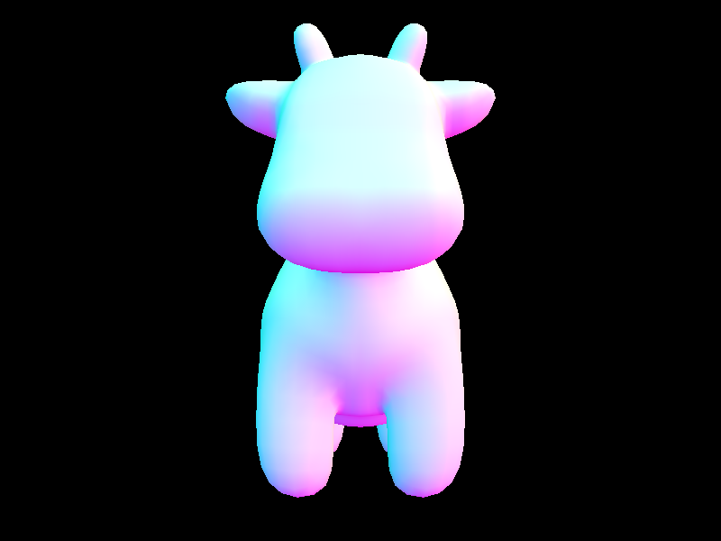
Part 2: Bounding Volume Hierarchy
Construction and split heuristic
My construct_bvh first expands a bounding box around the primitives in the current iterator range. If the range contains no more than the maximum leaf size, it stores that range in a leaf. Otherwise, it computes the bounding box of the primitive centroids and chooses the axis with the largest centroid extent. I use std::nth_element to split at the median along that axis, then recursively build both children.
This baseline uses a median split; Part 6 compares it with my added surface-area heuristic. It keeps the two primitive counts balanced and ensures that both recursive ranges are smaller, even if many centroids coincide. A balanced count does not guarantee minimum overlap, but it is simple and avoids a highly unbalanced tree caused by a poor spatial midpoint.
Box tests and traversal
The ray-box test intersects the three axis-aligned slab intervals with the ray's current valid interval. If the combined interval is empty, the entire subtree is rejected. At a leaf, the code tests its primitives. For has_intersection, traversal can return as soon as it finds a hit. For a closest-hit query, my code computes the entry distances of the child boxes and visits the nearer one first; a closer primitive hit shortens ray.max_t, allowing later traversal to reject geometry farther away.
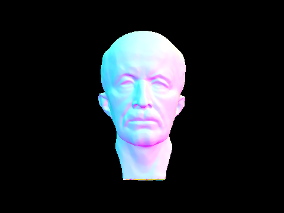
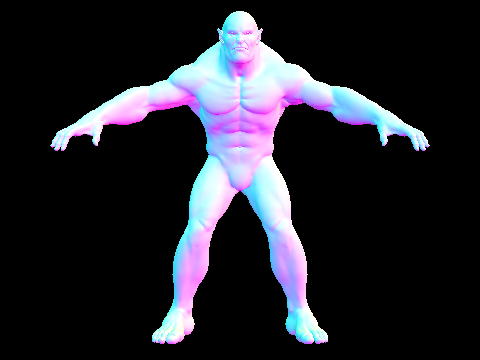
These fully framed normal-shading images demonstrate that the same intersection pipeline handles substantially larger meshes. A separate startup slowdown occurred while constructing the mesh in the Debug build; switching to Release resolved that bottleneck.
Part 2: Measured Acceleration
All three comparisons use the same Release executable, one thread, one camera sample per pixel, normal shading, and a 320 × 240 image. Each pair uses the same scene and camera, for 76,800 primary rays. The comparison switch bypasses every BVH box test and directly checks the primitive vector. The BVH is still constructed in both modes, so the table compares render time only; loading and construction are excluded.
| Scene | Primitives | BVH (s) | Brute force (s) | Speedup | BVH tests/ray |
|---|---|---|---|---|---|
| Cow | 5,856 | 0.0664 | 4.7364 | 71.3× | 4.414466 |
| Max Planck | 50,801 | 0.2561 | 69.1765 | 270.1× | 6.642891 |
| Beast | 64,618 | 0.2623 | 102.7988 | 391.9× | 3.765677 |
Brute force performs exactly one primitive intersection test per primitive per primary ray in this normal-shading experiment: 5,856 tests for cow, 50,801 for Max Planck, and 64,618 for beast. BVH traversal reduces these counts to approximately 4.41, 6.64, and 3.77 respectively. The result is a 71.3× to 391.9× reduction in render time. The speedup is not determined by primitive count alone: spatial arrangement, box overlap, camera rays, and traversal order also affect how much of the hierarchy can be skipped.
I compared the BVH and brute-force PNGs pixel by pixel. All three pairs are identical, supporting that the switch changes traversal cost without changing the rendered result. The default camera is tightly framed for these timing images; the fully framed images on the previous page are used to show the models.
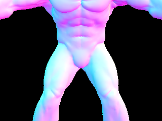

The table reports one render per scene and traversal mode.
Part 3: Direct Illumination
Uniform hemisphere sampling
At a surface hit I construct a local coordinate frame whose z-axis is the shading normal. I sample incoming directions uniformly over its upper hemisphere, transform them into world space, and trace rays with a positive minimum distance to avoid self-intersection. If the first hit is emissive, its emitted radiance contributes through the BSDF and cosine factor. Since the solid-angle density is 1/(2π), each sample receives a factor of 2π before averaging.
Importance sampling the lights
The light-sampling implementation calls sample_L for each light to obtain radiance, direction, distance, and density. It rejects directions below the surface. A shadow ray is bounded to stop just before the sampled light, so an object beyond the light cannot incorrectly block it. For an unoccluded sample, the estimator multiplies incoming radiance, BSDF, and the local cosine, then divides by the density. It averages within each light and sums across lights. Delta lights use one sample; area lights use ns_area_light.
A Lambertian surface has fr = reflectance/π. Directly visible emission is a separate zero-bounce term, while one-bounce radiance selects between the hemisphere and light-sampling estimators.
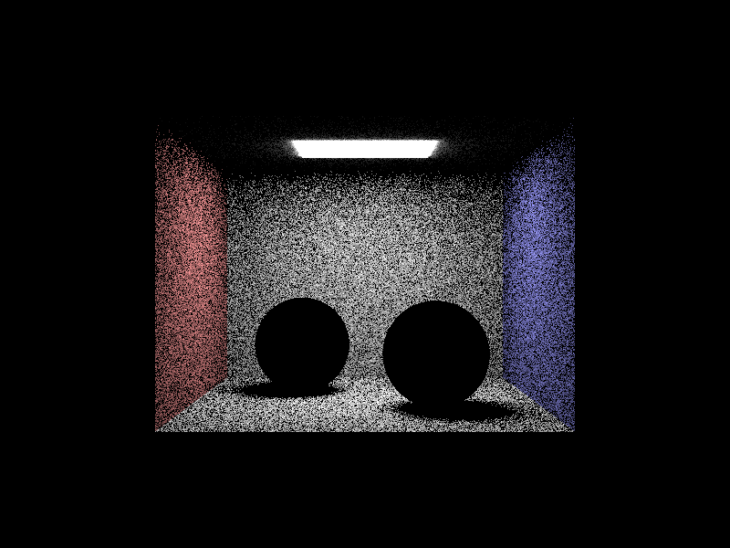
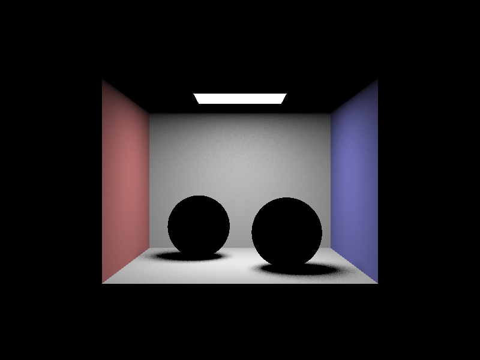
The hemisphere result is much noisier over the walls, floor, and shadow region. Uniform directions frequently miss the relatively small ceiling light and contribute zero. Light sampling directs samples toward emitters, so the main randomness comes from visibility and the light's finite extent. Both estimate the same direct-light integral, but importance sampling makes more effective use of the sample budget in this scene.
Part 3: Area-Light Sample Count
This sequence varies the number of light samples over 1, 4, 16, and 64. All four images use light importance sampling, one camera sample per pixel, maximum depth 1, and an 800 × 600 image. Increasing the light-sample count averages more visibility tests across the area emitter, reducing variance in the soft-shadow estimate.
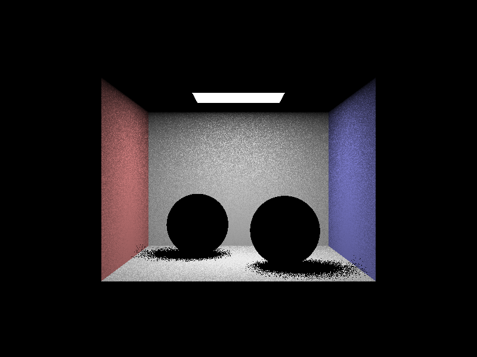
With one sample, the gray walls and penumbrae contain conspicuous grain. Four and sixteen samples increasingly stabilize those regions, while the 64-sample image has much smoother shading. The soft boundary of the shadow remains: it is a physical consequence of an area light, not noise to be removed. The shadows and walls provide the comparison of area-light sampling. The refractive and chrome spheres remain black in these depth-1 direct-light views.
For independent Monte Carlo samples, standard error typically falls in proportion to 1/√N. Thus quadrupling the sample count roughly halves noise amplitude, rather than eliminating noise altogether. This explains the diminishing visual improvement per extra sample. Increasing light samples alone also does not replace additional camera samples for antialiasing at geometric silhouettes.
Part 4: Global Illumination
Recursive indirect-light estimator
My recursive estimator starts with the direct-light contribution when the current accumulation/depth mode calls for it. For an additional bounce, it samples the BSDF in the local frame, rejects nonpositive density or a direction below the surface, transforms the direction into world space, and traces a new ray with one less remaining depth. The returned radiance is weighted by the BSDF, cosine, and inverse sampling density.
The first indirect bounce is always attempted (q = 1). On later indirect steps, the continuation probability is q = 0.65. A surviving continuation is divided by 0.65 so that random termination does not systematically reduce its expectation. The recursive result does not add surface emission again at secondary hits, because direct light is already estimated with explicit light sampling. Environment radiance is used if a continuation ray escapes and an environment light is available.
Accumulated mode includes contributions from the available bounce depths. Unaccumulated mode suppresses direct contributions at intermediate recursion levels and retains only the selected bounce order. Zero-bounce emission is handled separately. The depth cap still limits path length even when Russian Roulette is enabled.
Global illumination fills the bunny's underside and the shadowed side of the spheres with light reflected from surrounding surfaces. Red and blue walls also tint nearby surfaces, which is absent from a purely direct-light estimate. More bounces increase the range of possible paths; more samples reduce the variance of the estimate for those paths. These are different controls.
Part 4: Direct-Only and Indirect-Only Views
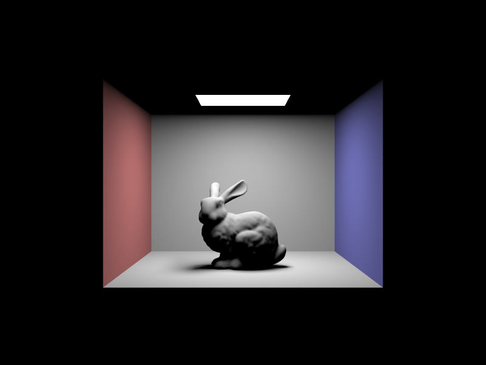
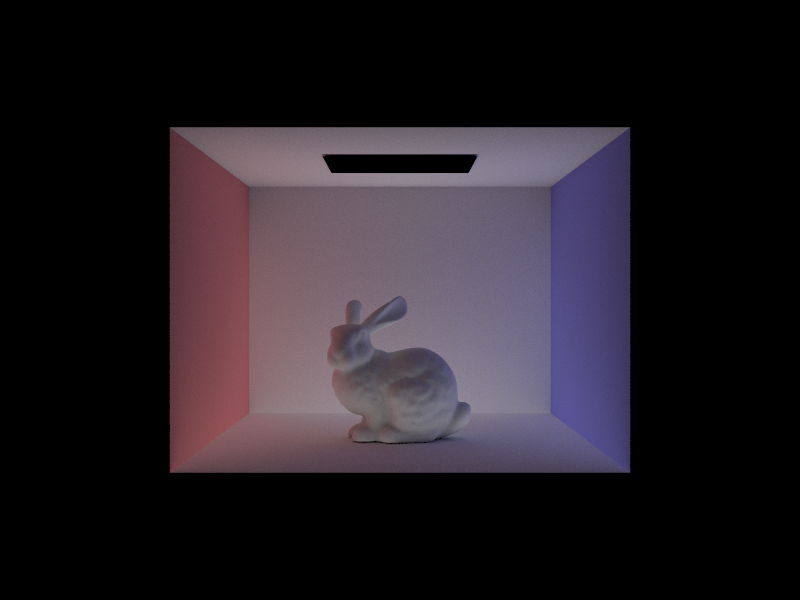
The direct-only image has a bright ceiling emitter and sharply dark regions under the bunny and around the contact shadow. In the indirect-only view, the emitter itself is black because its visible emission is excluded. Nevertheless, the room and bunny remain visible through reflected illumination. The wall colors are carried onto the bunny and floor, and the previously dark underside receives light through paths involving other surfaces.
To generate the indirect-only view, I suppressed the direct contribution only at the camera's first surface intersection and omitted visible emission/background radiance. I retained direct-light estimation at later hits: a direct-light sample at a secondary surface represents an indirect path from the camera. Removing direct lighting at every recursive level would incorrectly remove the light that should feed the indirect estimator.
The two views separate different terms of the rendering equation. The indirect-only image shows contributions from bounce orders 2 through 5.
Part 4: Accumulated vs. Individual Bounces
All bunny bounce comparisons use 1024 camera samples per pixel, 4 light samples, and an 800 × 600 image. Accumulated mode uses -o 1; individual-bounce mode uses -o 0.
Each row compares the accumulated result on the left with the isolated bounce contribution on the right. At depth zero, both modes reduce to visible emission, so the same zero-bounce image is reused. At depth one, the accumulated image additionally includes the ceiling light's emission, while the isolated one-bounce view excludes that zero-bounce term.
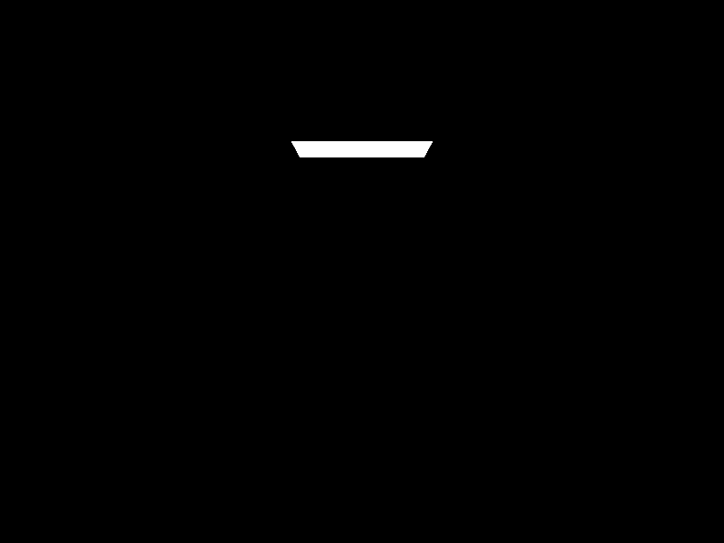
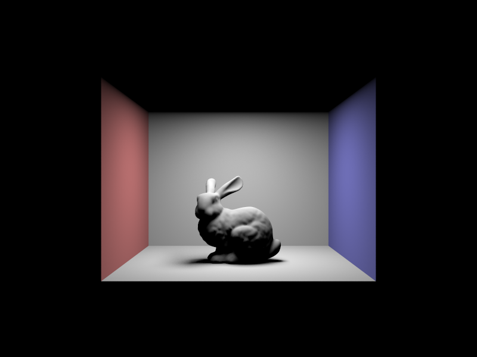
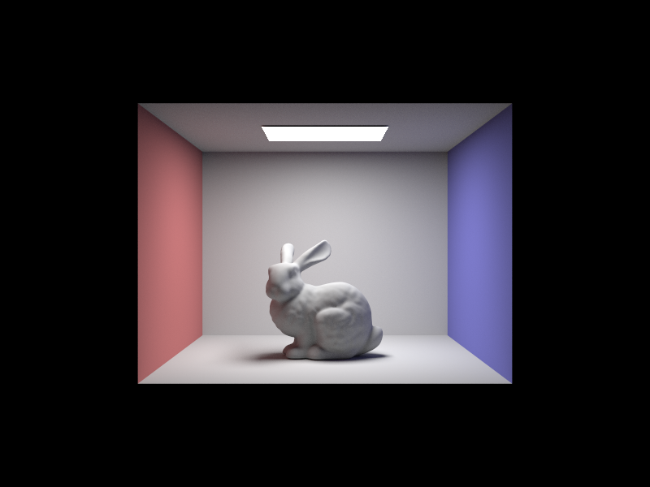
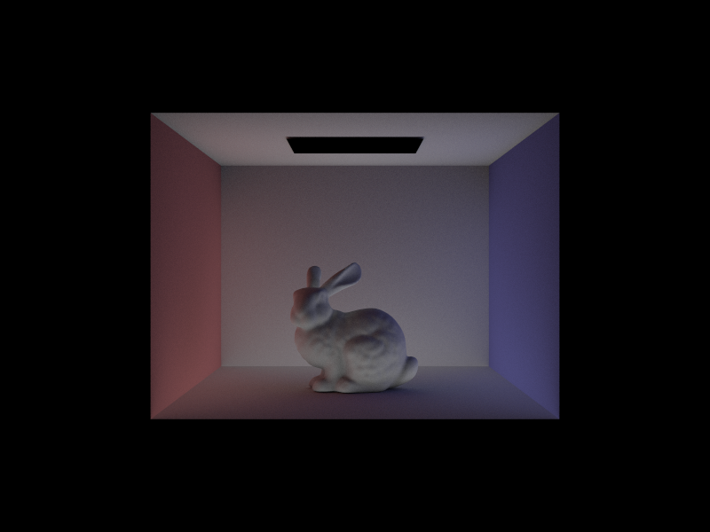
The second bounce is especially important: light reaches a surface after reflecting from another surface, so the bunny's underside and the floor receive illumination that direct lighting alone cannot provide. This also introduces wall-color bleeding.
Part 4: Higher Bounce Orders
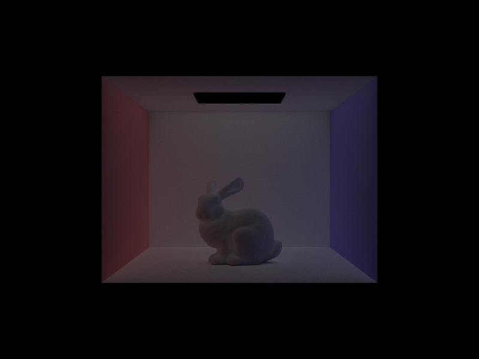
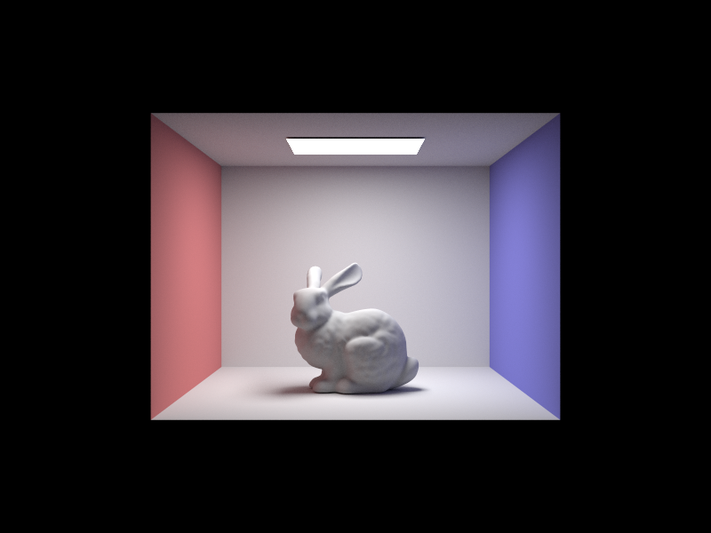
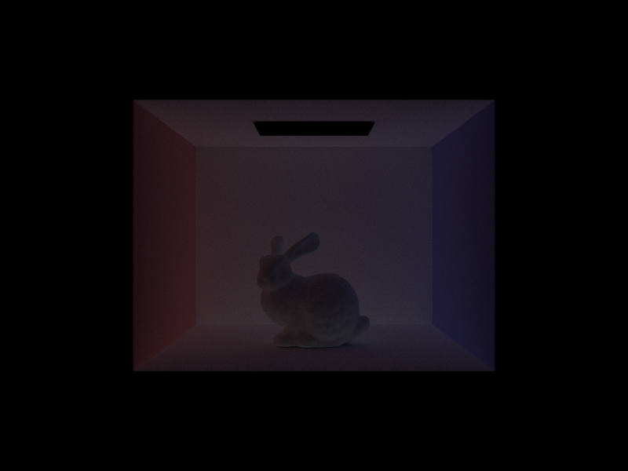
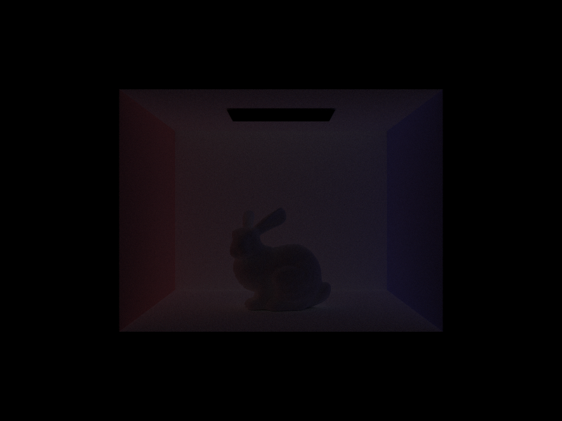
The isolated third bounce is dimmer and spreads indirect illumination farther through the scene. Fourth- and fifth-bounce contributions are weaker still, while accumulated images become progressively brighter and more filled in. This is consistent with diffuse paths losing throughput as light scatters and is absorbed at successive surfaces.
Compared with a basic rasterization pipeline using only local direct lighting, these paths naturally provide interreflection, color bleeding, and illumination in regions not directly visible to the light. Rasterization can approximate these effects with additional techniques, but they do not follow from local surface shading alone.
Part 4: Russian Roulette
This comparison uses accumulated results at maximum depths 0, 1, 2, 3, 4, and 100. The lower-depth images are reused from the accumulated series because the implementation already contains Russian Roulette. At depths too small for another recursive step, the hard cutoff occurs before roulette has an effect.
Russian Roulette allows long paths without tracing every path to the depth cap. After the guaranteed first indirect bounce, each further continuation has probability 0.65. Surviving through k such decisions has probability 0.65k; the estimator compensates with inverse-probability weights. A high maximum depth therefore does not imply that every sample traces 100 bounces.
The depth-100 result looks close to the already well-lit higher-depth accumulated images. The largest visual difference occurs between direct-only and the first few indirect orders. Later paths contribute less in this diffuse scene. Roulette preserves the expected value of the retained recursive estimator, but it introduces variance, and a finite maximum depth still truncates paths beyond that depth.
Part 4: Samples per Pixel
For the spheres scene, I hold light samples at 4 and maximum depth at 5 with accumulated bounces, then vary camera samples over 1, 2, 4, 8, 16, 64, and 1024. These images are 480 × 360 and use the same view.
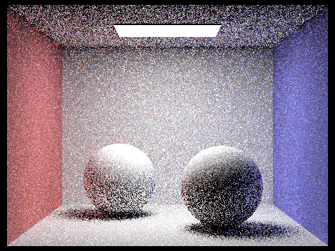
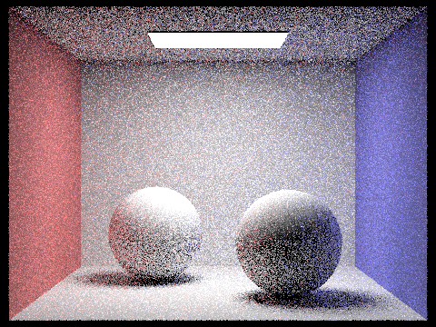
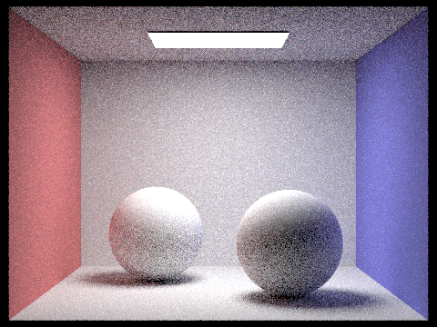
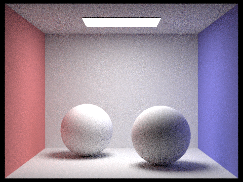
One and two samples give very unstable estimates, visible as large fluctuations over the walls and sphere surfaces. Four through sixteen samples retain obvious grain but better reveal the shading. At 64 samples, the surfaces and penumbrae are substantially smoother; at 1024, most large-scale noise has disappeared. Residual differences are stochastic rather than a change in the underlying lighting model.
Higher sample count trades runtime for lower variance. From 64 to 1024 there are 16 times as many camera samples, but a typical independent-sample error reduction of about 4 times, not 16 times. Adaptive termination can alter the actual number of samples taken in easy regions, so sample budgets alone do not determine wall-clock time.
Part 5: Adaptive Sampling
Both scenes use an 800 × 600 image, a maximum of 2048 camera samples per pixel, 1 light sample, maximum depth 5, and accumulated bounces. Convergence is checked every 64 samples with tolerance 0.05. The sphere scene uses diffuse materials (CBspheres_lambertian.dae).
Convergence test
Instead of taking the maximum number of samples for every pixel, I track the running sum s1 and squared sum s2 of luminance. After each configured batch, and once at least two samples exist, I estimate the sample mean and variance. A 95% normal-approximation confidence half-width measures uncertainty in the estimated mean. I stop when it is below the tolerance times the mean luminance, or when the maximum sample budget is reached.
I clamp the computed variance to zero to protect against small negative roundoff errors. The final color is divided by the actual number of samples used, and sampleCountBuffer stores that count for the diagnostic map. Batch checks reduce overhead relative to testing convergence after every ray.
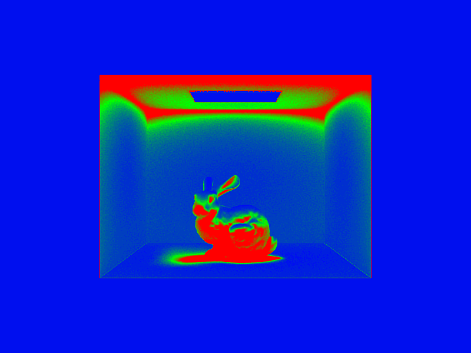
The rate map assigns high budgets to the bunny’s underside, portions of its face and ears, the contact-shadow region, and the ceiling. Much of the back wall and the top of the bunny use fewer samples. Broad smooth regions converge with fewer samples. Difficulty depends on variance in light paths and visibility, not simply whether a pixel is bright or dark. A dark region may need many samples when occasional paths carry large contributions.
The output remains visually smooth while sample use varies substantially across the image. This is the purpose of adaptive sampling: concentrate effort where the estimate is less stable rather than use the same budget everywhere.
Part 5: Second Scene
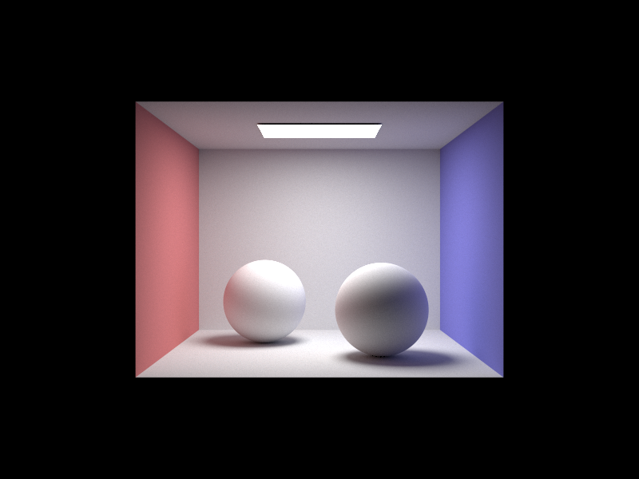
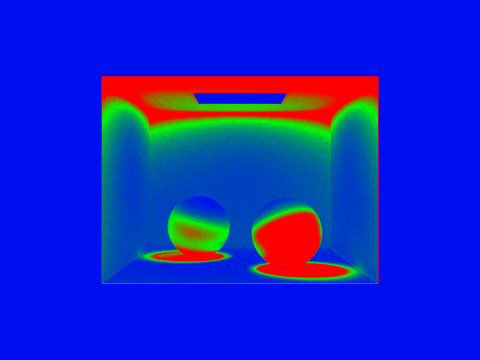
For the spheres, the right sphere and contact-shadow areas consume many samples, while substantial parts of the walls stop earlier. The map is not uniformly red, showing that the stopping rule is active. The left and right spheres need not receive identical budgets because their visibility and indirect-light distributions differ.
Part 6: Extra Credit — Surface Area Heuristic
Feature 1: 12-bin SAH on all three axes
I extended the BVH builder with a binned surface area heuristic and retained the median builder for a controlled comparison. The runtime switch CS184_BVH_SPLIT selects median or sah; both use the same traversal and maximum leaf capacity.
For each node, I compute its primitive and centroid bounds. Along each nondegenerate axis, I place primitive centroids into 12 bins and accumulate each bin’s primitive count and bounding box. Prefix and suffix unions provide the counts and surface areas on both sides of each of the 11 bin boundaries. I evaluate up to 33 candidates across the three axes, reject empty partitions, and choose the lowest estimated cost.
The area ratios approximate the probability that a ray crossing the parent also crosses each child. This favors splits with small child bounds and low expected primitive-test cost, even when the primitive counts are unequal. The constant traversal cost is the same for every candidate.
I retain the hard leaf-size limit rather than introducing a different SAH leaf-termination rule. Zero-area bounds, coincident centroids, invalid or empty partitions, and nodes at depth 64 or deeper fall back to a median split. This guarantees progress while avoiding long unbalanced SAH chains. The implementation is in src/scene/bvh.cpp and bvh.h.
Measurement setup
I ran cow, Max Planck, and beast three times with each builder using the Release executable, one thread, normal shading, one centered sample per pixel, and an 800 × 600 image. Each run traced 480,000 primary rays. Within each scene the camera, leaf capacity, and traversal were unchanged. Construction and rendering are timed separately; the table reports the median of each set of three measurements.
| Scene | Median build (s) | SAH build (s) | Median render (s) | SAH render (s) | Render-time reduction |
|---|---|---|---|---|---|
| Cow | 0.0050 | 0.0076 | 0.1526 | 0.1257 | 17.6% |
| Max Planck | 0.0579 | 0.1064 | 0.2035 | 0.1724 | 15.3% |
| Beast | 0.0713 | 0.1182 | 0.1570 | 0.1657 | -5.5% |
A negative render-time reduction means SAH was slower. All 18 measurements (CSV) are transcribed from the recorded console logs. These 800 × 600 results use different framing and ray counts from the earlier 320 × 240 brute-force experiment, so their times are not directly comparable.
Part 6: SAH Results and Tradeoffs
| Scene | Median tests/ray | SAH tests/ray | Reduction |
|---|---|---|---|
| Cow | 1.598952 | 1.345131 | 15.9% |
| Max Planck | 2.158808 | 1.662446 | 23.0% |
| Beast | 1.386910 | 0.880885 | 36.5% |
SAH reduces primitive intersection tests in all three scenes: 15.9% for cow, 23.0% for Max Planck, and 36.5% for beast. These are primitive tests, not counts of bounding-box tests. In the measured runs, rendering is 17.6% shorter for cow and 15.3% shorter for Max Planck, but 5.5% longer for beast. Fewer primitive tests alone therefore do not establish a wall-clock improvement; box traversal, tree structure, memory access, and run-to-run timing variation also matter.
Construction costs more with SAH because each node evaluates bins on all axes. Taking the median of each run’s construction + render time gives 0.1576 → 0.1333 s for cow, 0.2614 → 0.2784 s for Max Planck, and 0.2283 → 0.2839 s for beast. Thus only cow is faster overall for this short, one-sample workload. The construction cost matters most in short renders; it can be spread over more rays when a tree is reused or the sample budget increases.
Image consistency
I compared the first median and SAH output for every scene pixel by pixel. All three pairs have zero differing pixels and zero maximum channel difference. The builder changes work performed without changing the output in these tests.


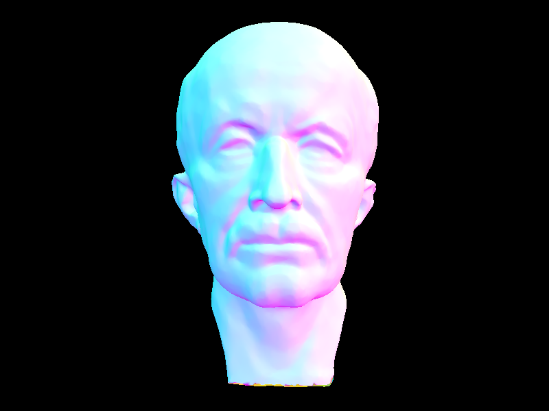

Part 6: Extra Credit — Jittered Pixel Sampling
Feature 2: stratified jitter inside each pixel
I added JitteredGridSampler2D as an implementation of Sampler2D and connected it to raytrace_pixel. Each pixel owns a fresh sampler. The original independent random sampler remains available through CS184_PIXEL_SAMPLER=random; jittered selects the new sampler.
For N samples, I choose the closest integer factor pair nxny = N and divide the pixel into equal-area cells. Four samples use a 2 × 2 grid and sixteen use a 4 × 4 grid. I shuffle the cell order and take one independent uniform jittered point inside each cell:
This prevents the gaps and clusters possible with independent pixel samples. Averaging a complete set of equal-area strata estimates the pixel integral without changing the normalization. Nonsquare budgets use rectangular grids; prime budgets use 1 × N strips. The existing one-sample pixel-center convention is preserved. This implements stratified jittered sampling.
I disable adaptive stopping with CS184_FIXED_SPP=1 so both methods take exactly the requested budget and jittered sampling completes its grid. Only pixel positions are stratified; light selection, BSDF sampling, and Russian Roulette keep their existing algorithms. The changed files are sampler.h, sampler.cpp, and pathtracer.cpp.
Equal-budget silhouette comparison
The beast renders use 800 × 600, one thread, SAH, and normal shading to isolate pixel integration from lighting noise. At 4 spp each mode traces 1,920,000 primary rays; at 16 spp each traces 7,680,000. The following full views and enlarged regions use the same camera and display scale.
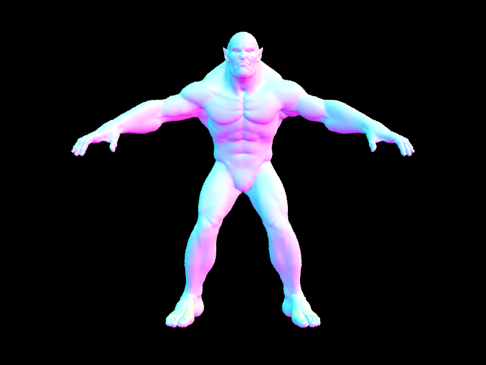
Part 6: Aliasing and Sampling Cost
Left-hand silhouette, identical enlarged region
The browser displays the same rectangle, x = 110–209 and y = 205–279, from each original 800 × 600 PNG. Nearest-neighbor enlargement exposes the sampled edge pixels; the original image data is unchanged.
At full-image scale the two samplers look similar. The enlarged silhouette reveals differences in the partially covered edge pixels, with irregularities more visible at 4 spp. Both 16-spp views resolve these transitions more consistently. Jittered sampling distributes samples across every cell in the pixel. In these views, the difference between sampling methods is subtle compared with the improvement from increasing the sample count.
| Beast budget | Random render (s) | Jittered render (s) |
|---|---|---|
| 4 spp | 0.5126 | 0.5950 |
| 16 spp | 2.1175 | 2.1433 |
These single-run timings show no speedup at equal sample counts. Jittered sampling adds cell-order generation and indexing; its purpose is sample placement rather than cheaper individual rays.
Part 6: Lighting Noise Comparison
I also compared the bunny at 16 spp, one area-light sample, maximum depth 5, and accumulated bounces. Both renders use 800 × 600, one thread, SAH, fixed sampling, and the same camera. Normal shading and indirect-only mode are disabled, so the images include visible emission, direct lighting, and indirect illumination.
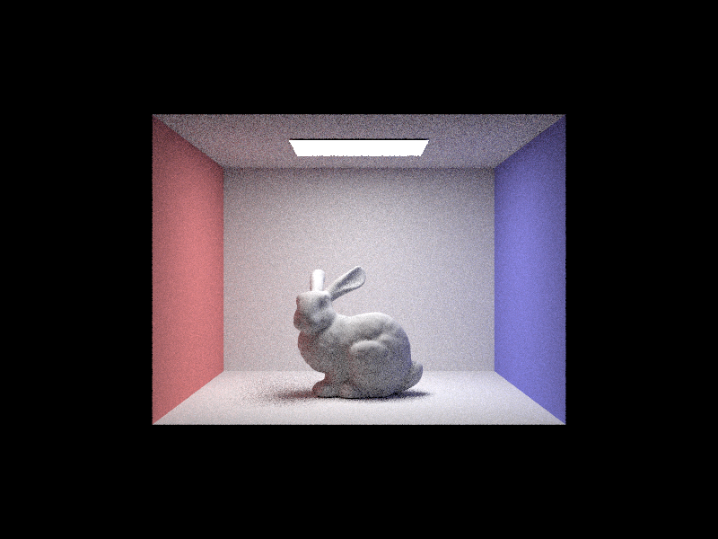
| Pixel sampler | Render time (s) | Reported traced rays |
|---|---|---|
| Random | 6.0182 | 18,995,863 |
| Jittered | 6.1851 | 18,990,924 |
The images have similar overall brightness, color bleeding, and visible grain. There is no obvious overall lighting-noise reduction from pixel jitter in this comparison. Stratifying the image plane does not stratify the light or BSDF directions that contribute much of the variance on broad shaded surfaces. Changing the pixel sequence also changes subsequent random draws, so the individual noise patterns are not expected to match.
Both methods launch 800 × 600 × 16 = 7,680,000 camera samples. The reported traced-ray totals additionally reflect secondary and visibility queries, and can differ as sampled paths and roulette decisions differ. The jittered render took about 2.8% longer in this run.
Implementation checks
Isolated tests checked sample bounds and one sample per equal-area cell over 125,300 generated samples, including nonsquare counts and repeated cycles. Pixel-loop checks covered fixed and adaptive sample counts, normalization, and the one-sample center. The comparisons use one render thread. Fixed sampling ensures that every pixel completes its stratified grid.
Raw output logs are included for beast random 4 spp, beast jittered 4 spp, beast random 16 spp, beast jittered 16 spp, bunny random, and bunny jittered.
Final Notes
Implementation and debugging observations
Normal shading helped separate intersection problems from lighting behavior. Release compilation resolved expensive large-mesh initialization, and paired normal renders isolated BVH traversal cost. Explicit output paths were more reliable than relying on the working directory of an interactive launch. These checks made it easier to distinguish a display/framing issue from a renderer error. Part 6 documents two extra-credit extensions: binned SAH construction and jittered pixel sampling.
Acknowledgement of AI assistance
I used ChatGPT for conceptual questions, debugging, and help formatting the website.